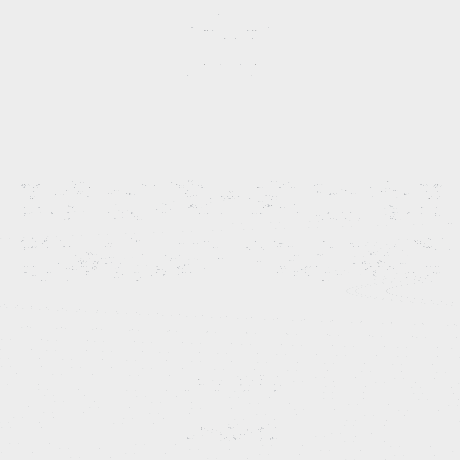
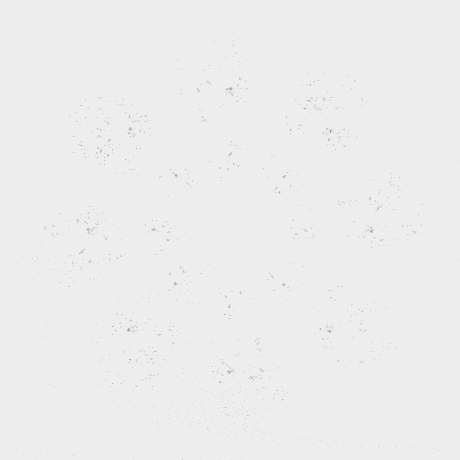
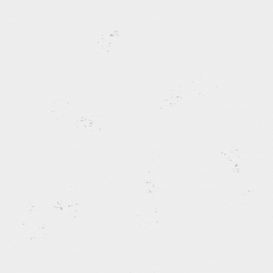

n = 8
Cueillette de Mandelbulbs
6 juin 2025
Un Mandelbulb résulte de la tentative de créer un ensemble de Mandelbrot en trois dimensions. Ce sont des formes issues d'une algèbre de nombres hypercomplexes et de transformations écrites en coordonnées sphériques. Voici certaines de mes découvertes lors de mon exploration dans ce monde magique issu du fameux fractal de Mandelbrot.
 Page "Mandelbulb" sur Wikipedia
Page "Mandelbulb" sur Wikipedia

n = 4

n = 4

n = 3
n = 6